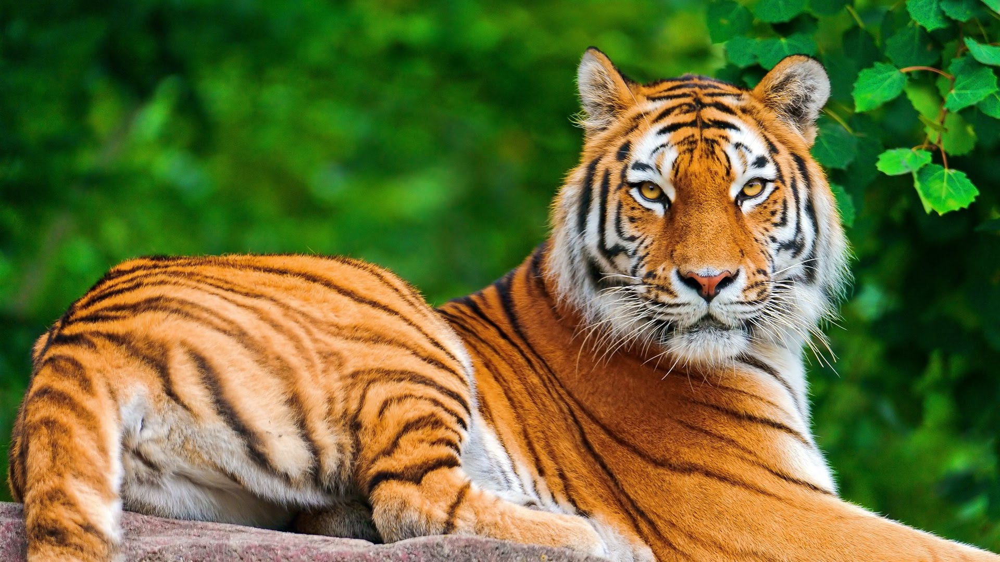

Land life refers to all living organisms that inhabit the terrestrial (land-based) ecosystems of the Earth. These environments include forests, grasslands, deserts, and mountains. Land life plays a vital role in maintaining ecological balance and supporting human existence.
Key features of Land life:
- Adaptation to Environment: Land organisms have developed specific features such as lungs for breathing air, limbs for walking or climbing, and protective coverings like fur, feathers, or scales.
- Diversity of Species:
Terrestrial life includes a wide variety of species such as:
Animals: Lions, elephants, snakes, birds, insects, etc.
Plants: Trees, shrubs, grasses, etc.
Microorganisms: Bacteria and fungi in soil.
- Habitat Types:
Forests: Home to rich biodiversity including mammals, birds, and insects.
Grasslands: Dominated by grasses and herbivores like deer and bison.
Deserts: Adapted species like camels, cacti, and reptiles.
Mountains: Harsh conditions suited to animals like mountain goats and snow leopards.
.
- Importance of Land Life:
Oxygen Production: Through photosynthesis by plants.
Food Chain Support: Land life forms the base of many food chains.
Soil Formation and Maintenance: Roots prevent erosion and contribute to soil health.
Climate Regulation: Forests and vegetation regulate temperature and rainfall.
- Threats to Land Life:
Deforestation
Urbanization
Climate change
Pollution and habitat destruction